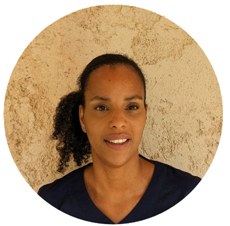

16 ans d'expérience en cabinet dentaire
Assistante dentaire dévouée, prête à rejoindre votre équipe.
Sabine est une professionnelle rigoureuse et attentive aux détails, expérimentée en assistance clinique, gestion de l'asepsie, stérilisation et coordination administratif. Elle excelle au confort du praticien comme du patient.

À propos
Sabine apporte une expertise clinique complète avec une forte expérience en assistance tous actes dentaires (omnipratique, parodontie, chirurgie, implantologie). Rigoureuse et attentive aux détails, elle veille autant au confort du praticien qu'à celui du patient, avec une excellente capacité à gérer les situations délicates.
Région PACA / flexible
16 ans en cabinet dentaire
Assistance · Hygiène · Organisation
Parcours professionnel
- Dr Montaner Sylvain (Fréjus, 2024-2026) – Cabinet forte activité chirurgicale. Assistance interventions, gestion asepsie, stérilisation & traçabilité. Imagerie panoramique & 3D.
- Dr Roulant Fréderic (Nice, 2015-2020) – Cabinet omnipratique réhabilitations prothétiques. Travail à 4 mains, empreinte optique, organisation & suivi administratif.
- Dr Lasry Franck (Paris 5e, 2007-2014) – Cabinet omnipratique à dominante implantologie. Accueil, assistance, carnet implantaire & comptes rendus.
- Dr Bachoud-Biquillon (Paris 16e, 2005-2007) – Première expérience dentaire en assistance clinique et gestion d'accueil.
Contact
Vous cherchez une assistante dentaire expérimentée et de confiance ? Contactez-moi dès maintenant.
Email : sabinethevenot@gmail.com